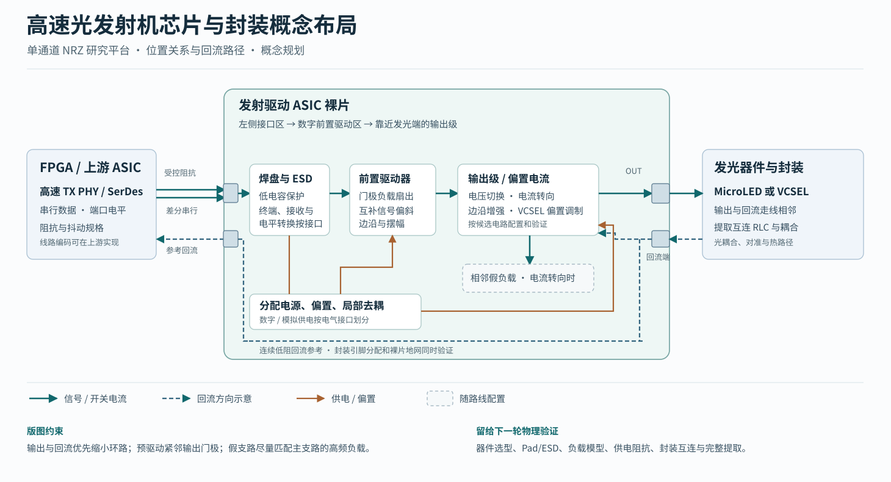
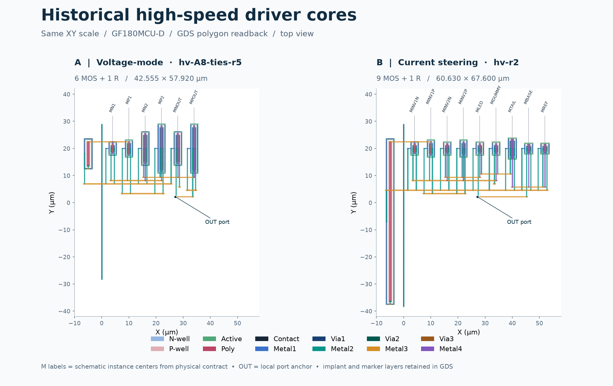
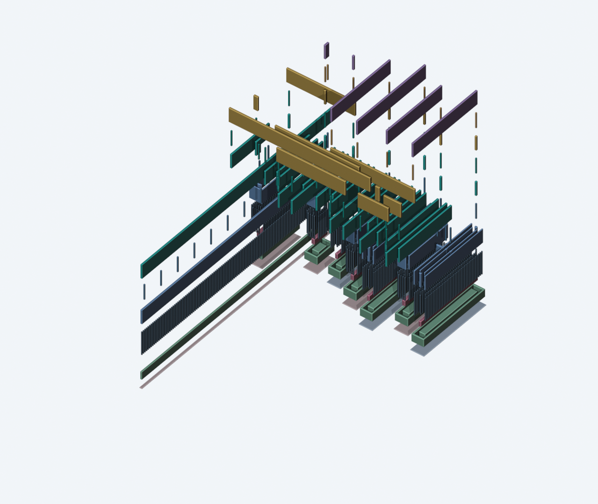
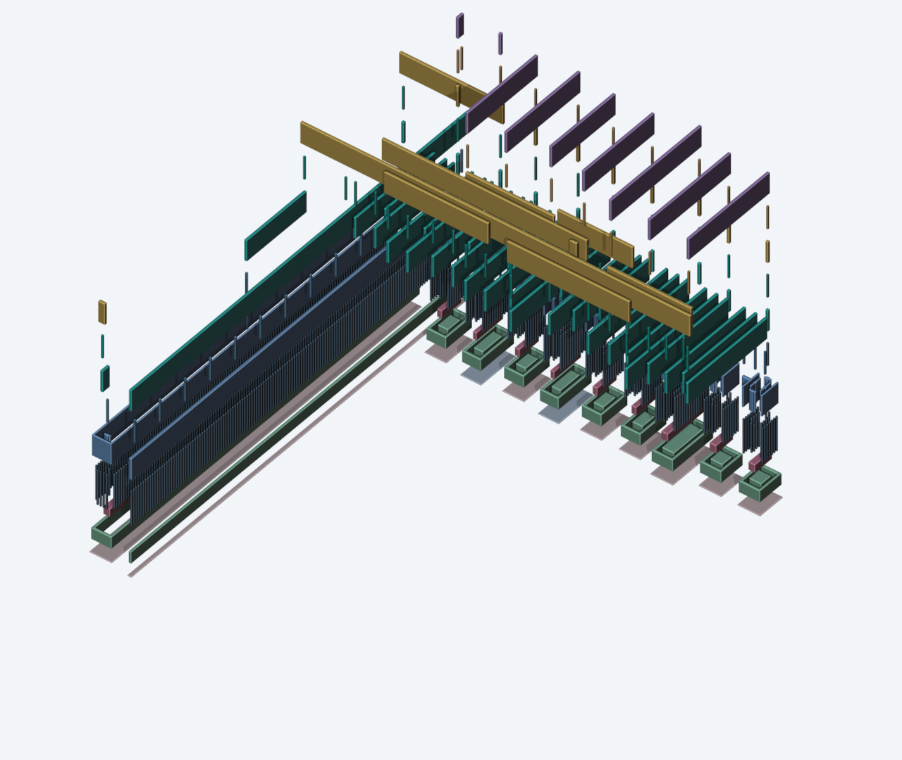

OPEN MICROLED DRIVER ASIC · 物理设计 · 2026-11-10
高速光发射机物理设计工作台
先从发射机、封装与发光器件的布局关系入手，再用两份已布线的 GF180MCU-D 历史核心，学习原理图器件、金属、通孔与提取寄生之间的对应关系。
从高速数据接口到发光器件

- 输入端。板间实验可用 FPGA 的高速 TX PHY 送差分串行数据。输入 Pad、ESD、通道终端和接收前端构成第一段负载。实际终端阻值、共模、电平和抖动预算由发端与收端接口共同确定。
- 前置驱动。前置驱动器靠近大门极输出器件。电压切换关注上下管交越与输出摆幅。电流转向关注互补偏斜和两支路的高频阻抗。边沿增强和 VCSEL 偏置／调制路径需要各自的幅度、时序与保护条件。
- 输出与回流。输出与回流焊盘相邻，尽量缩小封装到发光器件的电流环路。将 Pad/ESD、凸点或键合线、去耦与互连 RLC 联合建模，回灌到同一负载和接收链路中再比较时序、过冲和能耗。
这张图用于划定版图边界。完整 TX 的核心拓扑、Pad/ESD、供电、封装与实际发光器件接口仍需确定，随后才能实施晶体管布局布线和全芯片提取。
同一比例看两份已布线核心

| 检查项 | A · 电压驱动 | B · 电流转向 |
|---|---|---|
| 源版图 | hv-A8-ties-r5 | hv-r2 |
| 器件 | 6 MOS + 1 片上电阻 | 9 MOS + 1 片上电阻 |
| 核心包络 | 42.555 × 57.920 µm | 60.630 × 67.600 µm |
| 包络面积 | 2,464.786 µm² | 4,098.588 µm² |
| 归档 KLayout DRC | 0 项 | 0 项 |
| 归档 GDS 回读 LVS / RC 折叠 LVS | 均唯一匹配 | 均唯一匹配 |
| 提取网络 R / C | 95 / 64 | 127 / 76 |
| OUT 的关联电容和 | 5.733 fF | 4.104 fF |
A 以两级反相器和 NOUT／POUT 切换输出。B 的开关将尾电流引向主支路或 DUMMY 支路，另有 BASE 与 REF 器件。先在二维图找标注的器件与 OUT，再在三维场景切换对应金属层及通孔。原历史核心的 A 外接理想 VH、VL，B 外接 RREF、RDUMMY。这里的包络面积仅适用于所示研究核心，OUT 关联电容来自保存的核心 PEX。它随提取范围与电容定义变化，系统还需加入发光器件、Pad/ESD 和封装。
归档 R/C 基于 GDS 回读的 Magic 提取，并对线间和对地电容保留了项目记录的空间分配近似。该网络用于这两个核心的电路回归。当前 A/B/C 与 VCSEL 的新版候选电路需各自建立版图和物理验证记录。 A 原提取审计B 原提取审计
把版图沿工艺层拆开




- N 阱
- P 阱
- 有源区 Active
- 多晶硅 Poly
- 接触孔 Contact
- 金属 M1
- 通孔 V1
- 金属 M2
- 通孔 V2
- 金属 M3
- 通孔 V3
- 金属 M4
打开 .blend 后，在顶部场景列表选择 A 或 B。时间轴第 1 帧是组装位置，第 60 帧是分层展开位置。用 Outliner 按层隐藏对象，先看 N 阱、P 阱、有源区和多晶硅，再逐层打开 Contact、M1 和更高层金属。接触孔把有源区或多晶硅接到 M1。V1、V2、V3 分别跨接相邻金属层。
每个 Blender XY 单位对应 1 µm。两份核心分别回验 1,038 和 1,131 个所选 GDS 多边形，源坐标用原 GDS 数据库单位逐顶点比较。Z 使用锁定 PDK 的 Magic 抽取技术名义高度，显示放大 6 倍，展开时每层级另加 2 个显示单位。离子注入、器件标记、pin 图形等几何完整保留在源 GDS，此处显示 12 个选定绘制层。
GF180MCU-D 是硅 CMOS 平台。该配置提供五层金属，本次两个核心布线使用 M1 至 M4。阱和有源区以教学几何呈现，渲染适合学习相对位置。真实材料截面、膜厚分布、光电器件的外延和封装均以相应工艺资料及实测为依据。 GF180MCU 工艺选项官方 GDS 图层定义
复现与验证记录
从仓库根目录运行。KLayout Python 与 Matplotlib 取自现有物理验证环境。Blender 命令按本机安装位置配置。
build/layout/venv/bin/python scripts/highspeed_workbench_20261110/physical_prepare.py blender -b -t 4 --python-exit-code 1 --python scripts/highspeed_workbench_20261110/physical_blender.py build/layout/venv/bin/python scripts/highspeed_workbench_20261110/physical_validate.py
本轮回读源 GDS 和保存的 PEX，复核了源哈希、端口坐标来源、所选多边形和接触孔及通孔覆盖。DRC/LVS 表格对应归档原始日志，本轮新运行的是图形生成与回读验证。